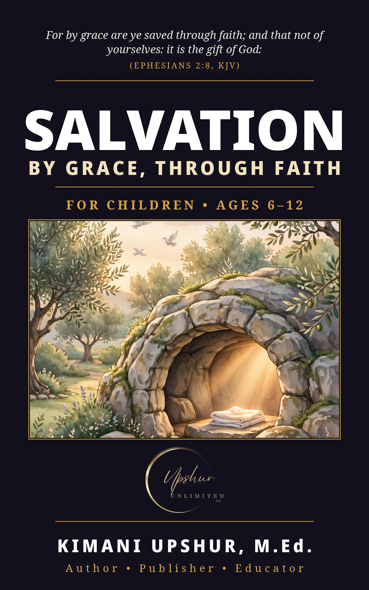

Home / Free Books / Salvation (Children's Edition)

What You’ll Get
- The whole Gospel story in warm, plain words — God’s love, Jesus’ coming, the cross, and the empty tomb, because Jesus is alive
- What grace means (a gift you don’t earn) and what faith means (trusting Jesus), explained for young readers
- Beautiful watercolor illustrations opening every chapter, with a friendly face to follow from chapter to chapter
- How a child can come to Jesus — ending with an invitation to give their life to Jesus Christ, to read together with a parent or another trusted grown-up
Who This Is For
Young readers ages 6–12 — and the parents, grandparents, and teachers who read with them.
What’s Inside
- Introduction: The Best Gift Ever
- Chapter 1: What Is Sin?
- Chapter 2: God Loves You
- Chapter 3: Jesus Came
- Chapter 4: Jesus Died on the Cross
- Chapter 5: The Empty Tomb — Jesus Is Alive!
- Chapter 6: Grace — A Gift You Don’t Earn
- Chapter 7: Faith — Trusting Jesus
- Chapter 8: How a Child Can Come to Jesus
- Chapter 9: Praying to Receive Jesus
- Chapter 10: What Comes Next?
- A Special Invitation: Give Your Life to Jesus
Questions
Is it really free? Yes. The complete ebook is free to download from Upshur Unlimited LLC, permanently — not a sample, not a trial.
Do I need to give my email? No. The download requires no email address and no account. (A separate, optional mailing-list invitation appears elsewhere on the site; it is never a condition of downloading.)
What formats? EPUB, PDF, and DOCX.
Keep Reading
Grown-ups: the original Salvation is free too — and older readers have the Salvation — Teen Edition (ages 13–18). Every edition is free, forever.
More free books are on the way — see the Free Books & Resources department.